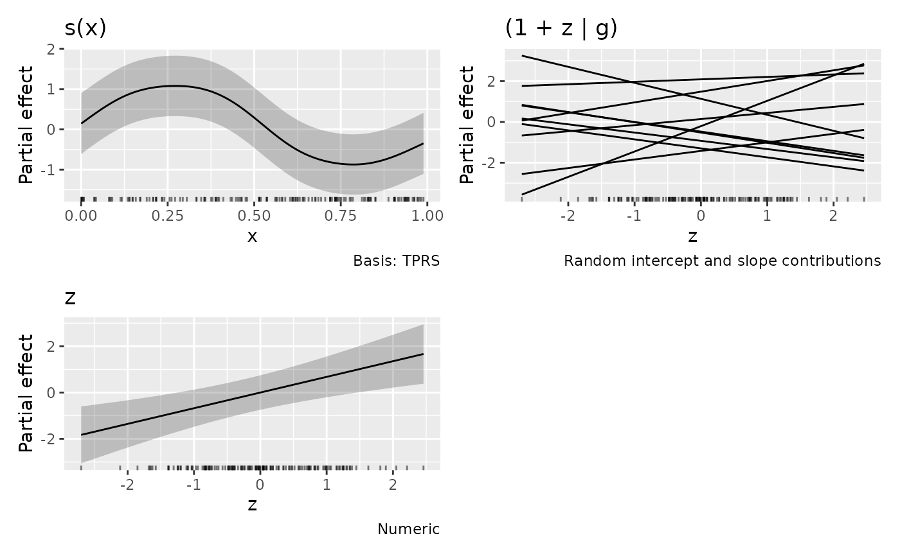

Effects and diagnostics for glmmTMB models
Source:R/glmmtmb-diagnostics.R, R/glmmtmb-effects.R, R/glmmtmb.R
glmmTMB-methods.RdEvaluate and plot the stored mgcv smooths in a glmmTMB fit. Coefficients and their joint covariance are transformed back to the constrained mgcv basis. Intervals use TMB's joint covariance, including fixed–random covariance; they are not mgcv frequentist or smoothness-corrected intervals.
Usage
# S3 method for class 'glmmTMB'
qq_plot(model, ..., method = NULL, type = NULL, conditioning = NULL)
# S3 method for class 'glmmTMB'
worm_plot(model, ..., method = NULL, type = NULL, conditioning = NULL)
# S3 method for class 'glmmTMB'
appraise(model, ..., method = NULL, type = NULL, conditioning = NULL)
# S3 method for class 'glmmTMB'
parametric_terms(model, ...)
# S3 method for class 'glmmTMB'
parametric_effects(
object,
terms = NULL,
...,
unconditional = FALSE,
frequentist = FALSE
)
# S3 method for class 'glmmTMB'
smooths(object, ...)
# S3 method for class 'glmmTMB'
get_smooths_by_id(object, id, ...)
# S3 method for class 'glmmTMB'
smooth_estimates(object, ..., unconditional = FALSE, frequentist = FALSE)
# S3 method for class 'glmmTMB'
smooth_coefs(object, select, ...)
# S3 method for class 'glmmTMB'
assemble(
object,
...,
parametric = NULL,
residuals = FALSE,
unconditional = FALSE,
frequentist = FALSE,
ranef_lines = FALSE,
envir = NULL
)
# S3 method for class 'glmmTMB'
draw(
object,
...,
parametric = NULL,
residuals = FALSE,
unconditional = FALSE,
frequentist = FALSE,
ranef_lines = FALSE,
envir = NULL
)Arguments
- ...
Arguments passed to the corresponding gratia method.
- method
QQ method;
NULLselects"simulate"for traditional residuals.- type
Residual type:
"pearson","response","deviance","pit","quantile", or"dharma", when available for the family. The default is Pearson for conditional checks and response residuals for marginal checks.- conditioning
character or
NULL;"conditional"(default) or"marginal"; see diagnostic_support.- object, model
A fitted
glmmTMBmodel.- terms
Character vector selecting parametric terms, as returned by
parametric_terms(). Later predictors append.1,.2, etc.- unconditional, frequentist
Must be
FALSE; mgcv-specific covariance alternatives are not available.- id
Integer positions of smooths across all linear predictors.
- select
Smooth or native random-effect coefficient selection, across all linear predictors. Numeric indices select smooths first, then native random coefficients. Native labels have the form
(1 | g)and(x | g); later predictors append.1,.2, etc.smooth_estimates()andsmooth_coefs()select smooths only.- parametric
Include parametric effect plots?
NULLfollowsdraw.gam(): include them unlessselectis supplied. Usetermsto choose parametric terms, andparametric = FALSEto omit them.- residuals
Must be
FALSE; partial residual overlays are not supported.- ranef_lines
Logical; replace QQ plots for a simple native random intercept and numeric slope term,
(1 + x | g), with one panel of lines showingb[0,g] + x * b[1,g]? Defaults toFALSE. Both coefficients must be selected. Multiple slopes, interactions, factor slopes, transformed slopes and structured covariance terms retain separate QQ plots.- envir
Optional environment for evaluating model covariates.
Value
Smooth estimates, coefficients, or plots, as for the GAM methods.
assemble() returns a named list of ggplot objects, of class
"assembled_plots". draw() combines these plots into a patchwork unless
wrap = FALSE, which returns the individual plots instead.
All smooths, native random effects and parametric terms are plotted by
default, as for draw.gam(). Smooths in later
linear predictors use mgcv-style labels such as s.1(x) and s.2(x).
Predictor order is conditional, zero-inflation (if present), then dispersion
(if present). Use smooths(object) and select to select individual smooths.
For models with multiple linear predictors, smooth and parametric subtitles
identify the "Conditional model", "Zero-inflation model" or "Dispersion model",
consistently with native random-effect panels. Constant dispersion alone
does not trigger these subtitles.
Saved parametric_effects() retain the labels in an optional .model column.
names(assemble(object, parametric = FALSE)) also lists native
random-effect coefficient panels.
Details
Smooth support requires stored smooth and random-effect metadata. Unsupported
multi-penalty structures, mapped joint parameters and rank-deficient smooth
models give errors. Factor-by and tensor smooth availability is determined
by glmmTMB; gratia does not expand the smooth types glmmTMB can fit.
Use draw(model, surface = "3d", ci_3d = TRUE) for interval surfaces on
smooths and numeric parametric interactions in any linear predictor.
ci_3d_alpha and ci_3d_col control their opacity and fill colour.
Pass cyclic = "polar" and optional polar_args to draw() or
assemble() for polar plots of supported one-dimensional cyclic smooths.
See draw.gam() for the coordinate options.
Parametric effects use fitted contrast coding and exclude smooth null-space
coefficients. Their intervals include uncertainty in the intercept of their
own linear predictor by default, as for GAMs. overall_uncertainty = FALSE
gives term-only intervals. Models without smooths are also supported.
Native random effects use one Gaussian QQ panel per coefficient type and
grouping factor, matching mgcv random-effect smooth plots. The internal
random effects representing smooths are excluded from these panels.
With ranef_lines = TRUE, eligible intercept-slope pairs use a common grid
over the fitting range of the numeric covariate, or its supplied data
values. Lines show random contributions only, without population-level
terms or uncertainty bands. Different formula terms are never combined.
Diagnostics use native Pearson residuals by default. QQ simulations hold
fitted smooths and grouping effects fixed and draw new responses; no refitting
is performed. Supported response families are Gaussian, Poisson, binomial,
nbinom1/2, beta, Gamma/ziGamma, Tweedie, lognormal, and zero-truncated
Poisson/nbinom1/2,
including applicable zero-inflation or hurdle mixtures and varying dispersion.
Truncated nbinom1 currently requires type = "response" because glmmTMB
does not supply its Pearson residuals. Other unavailable residual types fail
explicitly. Supported fitted response distributions also provide randomized
PIT/quantile residuals and inverse-CDF QQ references, including their
zero-inflation and truncation probabilities. Posterior predictive checks draw
coefficients and fitted random effects together from their approximate
posterior. See posterior_predictive_plot() for how covariance and other
family parameters are treated. Marginal checks simulate new effects using
glmmTMB's response generator. If marginal CDFs are not analytic, residual
checks use a shared sample of simulations to calculate moments and ranks.
See diagnostic_support for conditioning choices and remaining limitations.
Examples
if (requireNamespace("glmmTMB", quietly = TRUE)) {
library("mgcv")
set.seed(42)
d <- data.frame(x = runif(150))
d$y <- sin(6 * d$x) + rnorm(150, sd = 0.2)
m <- glmmTMB::glmmTMB(y ~ s(x, k = 8), data = d, REML = TRUE)
n_smooths(m) # one smooth term
draw(m)
# Get individual ggplot objects for further customization
panels <- assemble(m)
panels[["s(x)"]]
appraise(m, seed = 42)
# Parametric terms and native random intercepts and slopes
d$z <- rnorm(150)
d$g <- factor(rep(seq_len(10), each = 15))
d$y <- d$y + 0.5 * d$z + rnorm(10)[d$g] + rnorm(10)[d$g] * d$z
mixed <- glmmTMB::glmmTMB(y ~ z + s(x, k = 8) + (1 + z | g),
data = d, REML = TRUE)
draw(mixed) # separate QQ panels for intercepts and slopes
draw(mixed, ranef_lines = TRUE) # random contributions only
if (requireNamespace("ggcube", quietly = TRUE)) {
interaction <- glmmTMB::glmmTMB(y ~ x:z, data = d)
draw(interaction, surface = "3d", ci_3d = TRUE, n_2d = 15)
}
}
